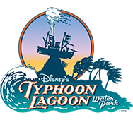

Roteiros dos parques

Typhoon Lagoon

O Typhoon Lagoon é o parque aquático mais antigo da Disney e na minha opinião é um dos mais diferentes. Com 25 anos e dono de uma das maiores piscinas de ondas do mundo, o Typhoon Lagoon é também o parque aquático que mais recebe visitantes: mais de 2 milhões de pessoas todos os anos. Pra se ter uma idéia, a piscina do parque é tão importante, que foi planejada para que se pudesse praticar surfe em suas ondas. O parque inclusive oferece aulas como a Re já contou na página de atividades aquáticas (clique aqui para ver).
Atmosfera
A lenda que é tema do parque diz que um tufão gigante assolou um paraíso tropical e deixou por ali muitos rastros espalhados. O principal é navio Miss Tilly que saiu do mar para o topo do monte Mayday e acabou virando o símbolo o Typhoon Lagoon.
Diferente do irmão Blizzard Beach, o Typhoon Lagoon é mais cheio mas não menos divertido. As atrações aqui são bem diferentes e seguem mais um estilo de parque de diversões, só que com água dentro. Enquanto o Blizzard Beach é um parque para relaxar, no Typhoon Lagoon a regra talvez seja menos descanso e mais agitação. Mas para aqueles que procuram um dia tranquilo, saibam que vocês também têm lugar no Typhoon Lagoon que oferece espreguiçadeiras por todo o parque.
Todos os anos, o parque entra em manutenção entre o começo de Outubro e o final de Dezembro. Enquanto isso o Blizzard Beach continua aberto para quem quiser curtir um dia de parque a
Alimentação
São 8 pontos de alimentação dentro do Typhoon Lagoon. Alguns são apenas quiosques onde você encontra snacks e outros com mesas para você sentar e comer. Da última vez que fomos, comi um chesseburguer muito bom o Leaning Palms. O engraçado é que tinha no cardápio um prato chamado “Feijão com Arroz e Galinha”, assim mesmo em português. É um prato de frango, arroz, feijão e banana frita que achei uma boa opção para os paladares saudosos do Brasil.
No parque também são oferecidas as All-Day Sports Bottle, umas canecas de plástico que podem ser reabastecidas com refrigerantes durante o dia inteiro nos pontos de refill espalhados pelo Typhoon Lagoon. A caneca custa US$9,99 e você pode usar durante todo o dia e depois levar como souvenir para casa.
O Typhoon Lagoon também oferece dois “campings” para se fazer um pic-nic no parque. Com isso, você pode levar uma geladeirinha com bebidas e comidas, e curtir uma sombra com a família. Os únicos itens que não podem ser levados são bebidas alcoólicas e recipientes (potes, garrafas, etc) de vidro.
Ingressos
Há duas maneiras de entrar no Typhoon Lagoon: uma é através da opção Water Park, Fun and More que pode ser adicionada ao seu ingresso para os parques temáticos da Disney (clique aqui para ver os preços), ou ainda através de um ingresso individual que pode ser comprado na bilheteria do parque ou no site da Disney. O ingresso individual custa US$56.45 (adultos) e US$47.93 (crianças de 3 a 9 anos) – preços de julho/2014.
Aluguel: armários, toalhas e cabanas
Como todos os parques aquáticos, no Typhoon Lagoon você pode alugar armários para deixar os seus pertences. Existem dois tamanhos disponíveis: o grande por US$10 e o pequeno por US$8 para o dia todo. Nos dois casos você precisa deixar um caução de US$5 que são retornados quando você devolver a chave do armário.
Toalhas estão disponíveis por US$2 cada, mas como eu já disse em outros roteiros, sempre levo uma toalha do hotel em que estou hospedado e depois, obviamente, levo de volta.
Os parques aquáticos da Disney também oferecem espaços reservados para quem quer ter um dia mais tranquilo e privativo. No Typhoon Lagoon as cabanas chamadas de Beachcomber Shacks abrigam 6 pessoas e incluem armários, um cooler com garrafas de água, toalhas a vontade, canecas com refil para todos e até um “mordomo” que serve comidas (cobradas a parte) durante todo o dia. O custo da cabana para 6 pessoas varia entre US$215 e US$315 (preços de julho/2014). Mais pessoas podem ser adicionadas por US$25 cada.
Localização, estacionamento e horários
O Typhoon Lagoon fica quase em frente ao Downtown Disney e o estacionamento do parque é gratuito. Por isso, vale a pena chegar cedo para pegar uma vaga perto da entrada.
Os ônibus internos da Disney também incluem o Typhoon Lagoon partindo de todos os hotéis, parques e Downtown Disney.
O parque fica aberto todos os dias entre as 10:00 e as 17:00, mas durante o verão americano, chega a abrir entre as 9:00 e as 20:00. De qualquer maneira, antes de ir, confirme o horário de funcionamento no site da Disney conforme ensinamos aqui.
Mapa do Typhoon Lagoon
Apesar de não ser visível no mapa do parque, o Typhoon Lagoon é dividido em 5 regiões que abrigam as atrações e ficam ao redor do ponto principal do parque que é o navio Miss Tilly. Abaixo, você encontra a lista de todas as atrações com meus comentários sobre cada uma delas. Se quiser acompanhar com o mapa do parque, clique aqui para abri-lo
;){kind=link}
MOUNT MAYDAY
É nesta região localizada no fundo do parque, que se concentra grande parte das atrações e toboáguas. É onde a maioria dos visitantes passa o dia se divertindo.
– Humunga Kowabunga: o toboágua mais rápido do parque, é na verdade um conjunto de três escorregadores fechados que levam os visitantes ladeira abaixo a 50 km/h. Eu gostei bastante dele apesar de não conseguir enxergar muito o que estava acontecendo, por conta do volume de água caindo na minha cara.
– Storm Slides: aqui você encontra três escorregadores abertos repletos de curvas. É sempre uma das atrações mais lotadas do parque e nem acho tudo isso viu. O fato da inclinação dos toboáguas não ser muito grande, faz com que a gente escorregue muito devagar.
– Gang Plank Falls: esse toboágua é para toda a família. As bóias grandes comportam 4 pessoas que vão girando por um caminho cheio de curvas e cachoeiras. Na minha opinião também acaba sendo um pouco devagar, mas acho que também depende muito do peso dentro da bóia. A diversão vai depender mesmo da animação do seu grupo.
– Mayday Falls: pra mim essa é a segunda atração mais legal do parque (a primeira vem daqui a pouco). Em cima de uma bóia que mais parece um donut, você desce com uma boa velocidade um escorregador que simula corredeiras até uma piscina no final.
– Keelhaul Falls: é o toboágua irmão ao Mayday Falls, mas por ter uma inclinação menor, vai um pouco mais devagar. Ela também passa por umas “cavernas” ao longo do caminho.
HIDEAWAY BAY
Essa é a área mais “escondida” do parque e fica localizada atrás dos vestiários. É no Hideway Bay que você encontra uma praia tranquila (e distante da praia principal do parque) e a atração mais nova do Typhoon Lagoon.
– Crush ‘n’ Gusher: a Disney criou aqui uma verdadeira montanha russa aquática e ela se tornou a minha atração favorita do Typhoon Lagoon. O Crush ‘n’n Gusher é um toboágua com quedas e também subidas. “Mas como assim subidas?” você pode pensar. Juntando o impulso das quedas e jatos de água muito fortes, as bóias são empurradas para o alto deixando a atração muito mais radical. Aqui é possível ir em bóias de 1, 2 ou 3 pessoas e para cada uma delas existe um caminho diferente. Dá pra experimentar todos eles se quiser.
TYPHOON LAGOON
A central e maior área do parque é uma grande praia com areia branca pra quem quer relaxar e descansar das atrações das outras áreas.
– Typhoon Lagoon Surf Pool: a principal atração do parque é sem dúvida essa piscina que tem ondas que chegam a 2 metros de altura. A piscina tem dois ciclos de funcionamento: ondas de surf e marolas. A cada 30 minutos no ciclo de marola, com ondas menores e mais calmas, dá-se início a 90 minutos no ciclo surf, com ondas gigantes que são disparadas a cada 1 minuto e meio e levam todos para o “rasinho”. No vídeo abaixo, eu filmei de vários pontos o efeito desse tsunami.
– Bay Slides: pequenos escorregadores pra criançada que fica no canto esquerdo da piscina de ondas.
SHARK REEF
Dois recifes de água salgada (e muito gelada!) separados pom um navio naufragado que proporciona experiências dignas de uma viagem ao caribe.
– Shark Reef: essa é uma das atrações mais diferentes de todos os parques de Orlando, ainda mais dentro da Disney. Com um equipamento de snorkel e colete salva-vidas fornecidos gratuitamente na entrada da atração, você irá nadar nas congelantes águas do recife para encontrar peixes e tubarões. Pra entrar na atração é preciso saber nadar sem auxílio de ninguém, pois essa é uma atração onde você fica livre com os peixes na água. Os tubarões-martelo e tubarões-tigre sempre se mantém distantes: eles não se aproximam das pessoas proativamente e também não é permitido o mergulho dentro do shark reef para se aproximar deles. De qualquer forma, a Disney é super preocupada com segurança então fique tranquilo que todos os animais ali são inofensivos. Para os menos corajosos, há uma ponte que cruza o recife de onde é permitido ver os peixes e as pessoas nadando de uma distância segura.
– S.A.S Adventure: essa é uma das poucas atrações pagas dentro dos parques da Disney. Em uma experiência de 30 minutos, os visitantes são rapidamente treinados a usar um equipamento de mergulho com tanque de oxigênio e vão no fundo do recife interagir com os peixes. Para participar é necessário pagar US$20. Crianças menores de 5 anos não podem entrar.
CASTWAY CREEK
– Castway Creek: como todo e bom parque aquático, o Typhoon Lagoon não poderia deixar de ter o seu rio de correnteza. O Castway Creek dá a volta em todo o parque e tem vários pontos de saída, além de bóias individuais e para duas pessoas que ficam flutuando e você pode pegar sem pagar nada por elas.
– Ketchakiddee Creek: playground para crianças com escorregadores e fontes espalhadas além de uma pequena praia para os pequenos se divertirem.